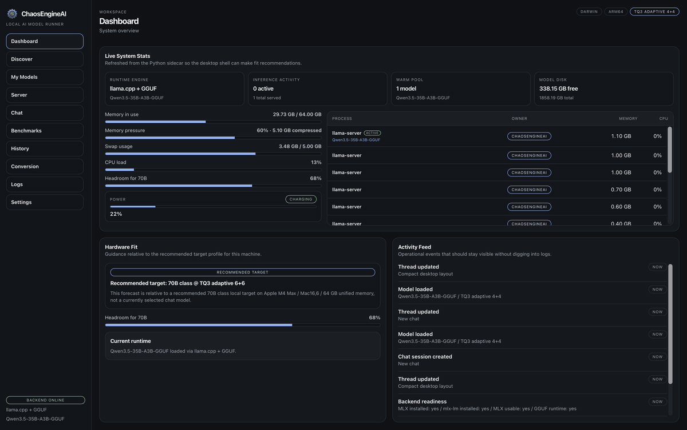

Your local AI workstation.
Discover, download, convert, serve, chat with, benchmark, and generate images from open-weight models — all in one desktop app. Powered by llama.cpp, Apple MLX, and pluggable cache compression (RotorQuant, TriAttention, TurboQuant).
macOS · Linux · Windows · signed in-app updates

Everything you need, locally.
A single desktop control plane that replaces a stack of scripts, notebooks and CLIs.
Dashboard
Backend health, engine, loaded model, hardware, and live warm-pool telemetry.
Discover
Curated catalogs with capability tags — chat, coding, vision, reasoning, tools, multilingual.
My Models
Local library sorted by name, format, size, context or modified date — one-click launch.
Chat
Streaming multi-thread chat with document RAG attachments and image inputs for vision models.
Server
OpenAI-compatible HTTP server with bind address, request stats and a built-in test panel.
Benchmarks
Live tok/sec & TTFT, prompt sets, full report cards, saved history with side-by-side diffs.
Image Discover
Curated Stable Diffusion catalog — browse, filter by compatibility, and install with one click.
Image Studio
Prompt-based image generation with aspect ratio, quality presets, negative prompts, and live progress.
Image Gallery
Browse, filter, and reuse saved outputs — compare models and re-run with the same seed.
Conversion
Hugging Face → MLX with optional compression. Layer-by-layer live progress.
Warm pool
Recently-used models stay hot — subsequent loads are instant.
In-app updates
Signed, verified, cross-platform. Launch → prompt → relaunch.
Logs
Live tail of the backend stream — load events, server requests, errors — with level filters.
Settings
Directories, default launch preferences, cache strategy, fused attention, FP16 layers.
Telemetry
Backend health, engine in use, hardware, memory pressure — always one glance away.
Cutting-edge KV cache compression.
ChaosEngineAI supports multiple cache compression backends via a pluggable strategy system. Install a backend, restart the app, and it appears in the cache selector — no config needed. Run bigger models in tighter memory budgets without giving up quality.
- RotorQuant — 4D quaternion & 2D Givens rotation compression (3-4 bit)
- TriAttention — transparent vLLM-integrated cache budget management
- TurboQuant — PolarQuant with fused Metal kernels for Apple Silicon
- Native f16 — full-precision baseline, always available
Download & install.
Signed, cross-platform builds with in-app auto-updates from v0.4.20 onward.